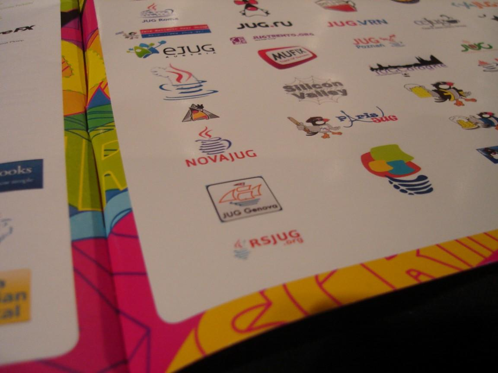
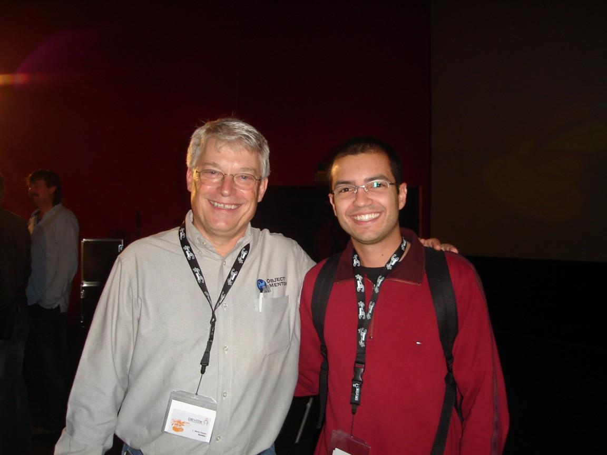
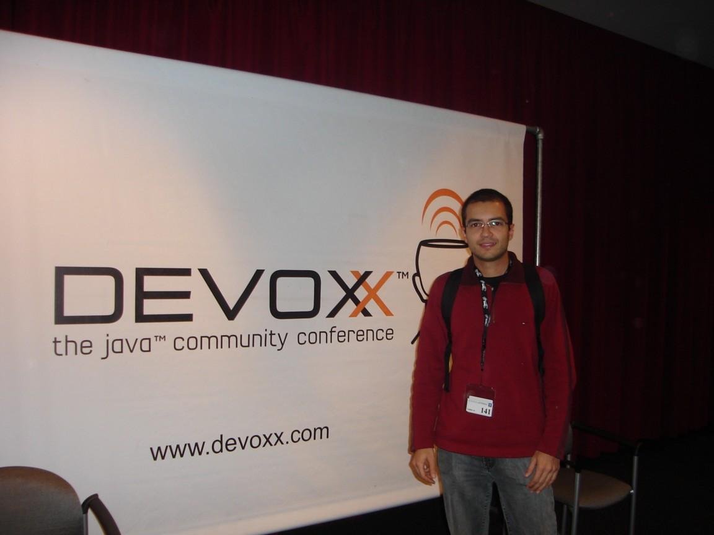

O Devoxx é um evento anual sobre Java, promovido pelo BEJUG, que ocorre em Antuérpia, na Bélgica. Neste ano, o RSJUG participou como Grupo de Usuários parceiro do evento, e na tradução do portal de conteúdo técnico, o Parleys, para Português do Brasil.
{kind=link}
Esse é o relato da participação do Diego Moreira da Rosa, em sua segunda participação no evento:
"Depois de algumas horas de viagem, cheguei ao MetroPolis Business Center em Antuérpia no início da tarde de quarta-feira para iniciar a minha participação no Devoxx 2009. Logo de cara, algumas constatações saltavam aos olhos.
{kind=link}
Em primeiro lugar, em pleno horário de almoço, o saguão não estava lotado como costumava acontecer no ano passado. Além disso, também em relação ao evento anterior, havia menos estandes de patrocinadores e, no lugar onde costumava ficar o vibrante estande da Sun, se via um tímido e apagado estande da Oracle. Parecia que em meio à crise econômica e às incertezas a respeito da compra da Sun e do futuro do Java, o Devoxx havia perdido um pouco do seu brilho. Para completar, durante as palestras da manhã, Mark Reinholds havia feito o anúncio que viria a se tornar a grande notícia do evento: closures no JDK7. Menos mal que estava para começar a palestra de James Gosling, ou seja, nem tudo estava perdido.
 O pai do Java fez uma apresentação interessante, porém sem muito brilho, sobre a Java Store, ferramenta para compra e venda de programas Java. Depois dele, Antonio Gonçalves apresentou as novidades do JEE6, enquanto Chet Haase e Romain Guy apresentaram a sua já tradicional palestra sobre rich clients, dessa vez, falando especificamente sobre animações. O segundo dia começou com as ótimas palestras de Ivar Jacobson e Robert C. Martin, este último dando um show de carisma e eloquência falando sobre o profissionalismo (e a falta dele) entre desenvolvedores de software. Sua palestra foi tão entusiasmante que o seu último lançamento, o livro "Clean Code", se esgotou minutos depois na loja do evento. Ainda no segundo dia, destaque para a palestra de Stephen Chin sobre as novidades do JavaFX, incluindo as novas APIs de componentes gráficos. Sem uma grande estrela como foi o lançamento do JavaFX em 2008, a edição deste ano ficou marcada pelas novas versões e importantes atualizações dos principais frameworks, como foram os casos do JDK7, JavaFX 1.2, JEE6, GlassFish v3 e Spring 3.0. Destaque também para o grande número de palestras sobre Scala, comprovando que essa linguagem veio para ficar.
{kind=link}
Em resumo, estava tudo lá (a infraestrutura impecável, palestrantes renomados, a deliciosa cerveja belga...), mas parecia que faltava alguma coisa. Talvez fosse a falta de um grande anúncio ou simplesmente o ar de incerteza sobre o futuro da tecnologia Java que pairava no ar. A verdade é que, em meio a crises e fusões, a edição do próximo ano será crucial para o Devoxx, assim como o Java, provar que continua forte."
{kind=link}